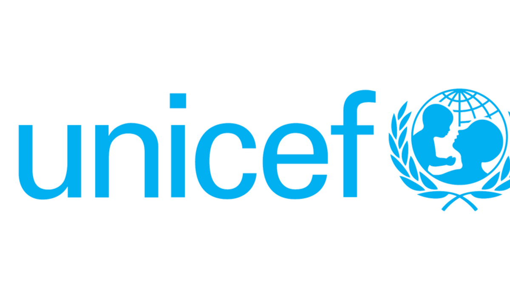

Iyer, Shivani: Community Service
Althought I was born and raised in Plano, Texas, my parents were not born here. They were born and raised in India. Since I was a child, we would go back to visit my grandparents. Whenever I go to India, I am always shocked. While there are many things improving, one thing that always gets to me is how many people are on the streets just begging for money. They all look so malnourished and every single one of them look like they have been wearing clothes for multiple days at a time.
This has truly inspired me to give back to the community. When I was in 9th grade, I took my first steps towards that. I joined a club called "Unconditional". We would go to old age homes, make cards for orphanages, and have food drives for homeless shelters. I was in this club up until my senior year of high school. Every summer when I was in high school, I also volunteered at the Baylor Scott and White Medical Center of Plano. I would volunteer for multiple hours a week with patient care and generally helping around in the hospital.
When I was 18, I got my first letter asking me to donate to UNICEF. I was so excited and decided that I would sonate $20 every month to these children in need and this cause in need. When I came to college, I joined a women's organization called Aggie Arrows. We had our main roots in sisterhood, diveristy, and service.
Just seeing what state these third world countries are in, I am immensely motvated to give back. I never realized how fortunate and privelaged I am to have two amazing parents to be able to provide for me all my life and who were able to send me to an amazing college like Texas A&M Univeristy. I have learnt to be very thankful for everything in life because I know I am privelaged and hence, I am excited to continue giving back to the community.
